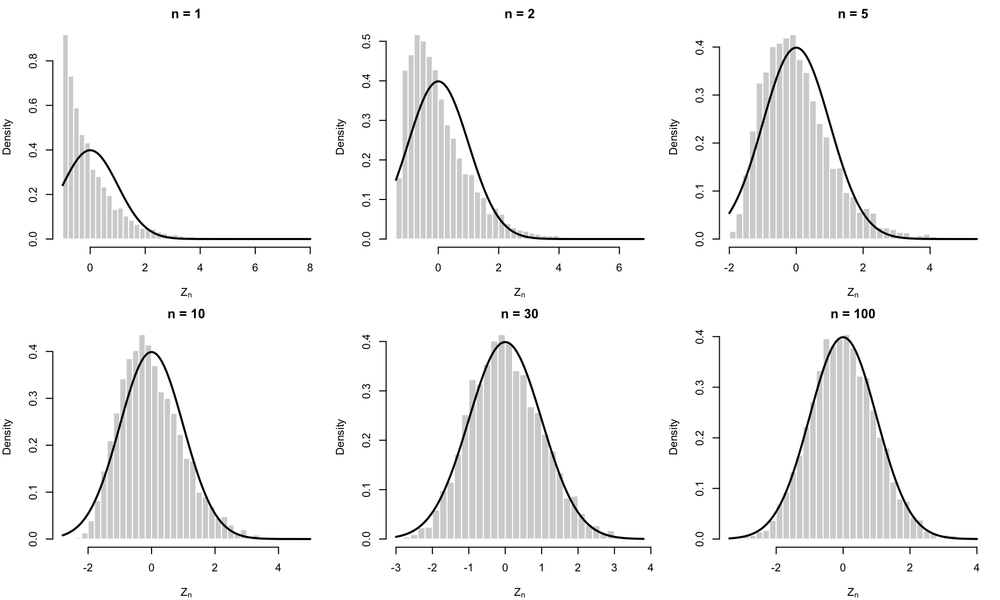
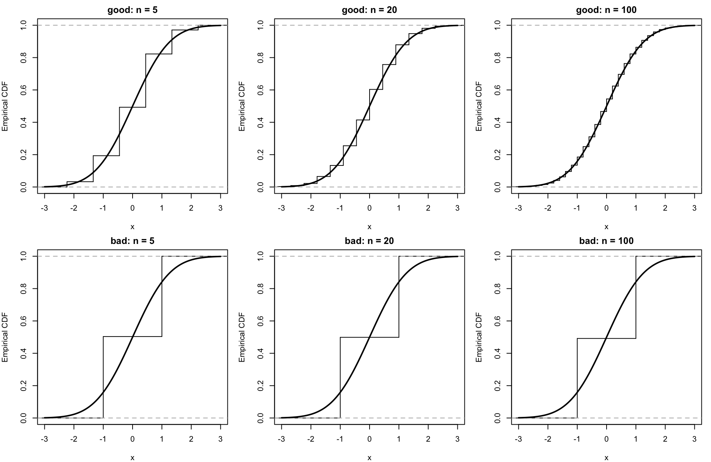
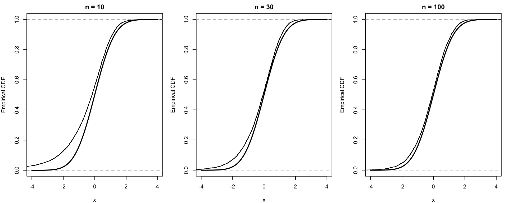
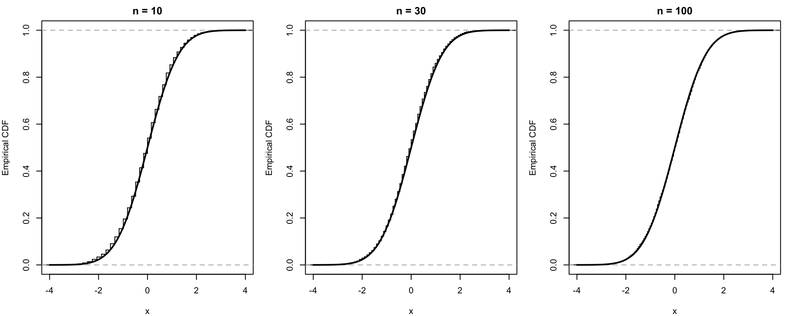

lecture6
確率論の基礎概念その5：中心極限定理
今回は中心極限定理を扱う。
前回の大数の法則は \[ \bar X_n = \frac{1}{n}\sum_{i=1}^n X_i \to \mu \] という主張だった。つまり，標本平均は母平均に近づく。ということである。
しかし計量経済学で本当に欲しいのは，それだけではない。 推定量がどのくらいのスケールで揺れるのか，その揺れがどんな分布で近似できるのか，を知りたい。 信頼区間，\(t\) 統計量，Wald 検定，GMM の漸近分布などは，全部この分布での近似による話である。
中心極限定理（CLT）が教えてくれるのは，
- 標本平均のズレはだいたい \(n^{-1/2}\) の大きさであり
- そのズレを \(\sqrt{n}\) 倍すると
- 極限では正規分布で近似できる
という事実である。
普通（？）中心極限定理は特性関数を使った照明がなされる。しかし今回は特性関数は使わない。導入してないので。 その代わり，Lindeberg の三角配列のアイデアに沿って照明の流れを見る。
何を知りたいのか：平均の極限ではなく，平均の揺れの極限
\(X_1,X_2,\dots\) を i.i.d. とし， \[ E[X_1]=\mu,\qquad \mathrm{Var}(X_1)=\sigma^2<\infty \] とする。
大数の法則は \[
\bar X_n \overset{p}{\to} \mu
\] を与える。しかし，これだけでは統計的推測はできない。
たとえば「\(\bar X_n\) は \(\mu\) の近くにいる」と言われても，その近さが \(1/n\) のオーダーなのか，\(1/\sqrt{n}\) のオーダーなのか，あるいはもっと遅いのかは，LLN だけではわからない。
そこで，自然に \[ \sqrt{n}(\bar X_n-\mu) \] を見る。
なぜ \(\sqrt{n}\) なのか。分散を計算すると， \[ \mathrm{Var}\!\left(\sqrt{n}(\bar X_n-\mu)\right) = \mathrm{Var}\!\left(\frac{1}{\sqrt{n}}\sum_{i=1}^n (X_i-\mu)\right) = \frac{1}{n}\sum_{i=1}^n \mathrm{Var}(X_i-\mu) = \sigma^2. \] つまり，\(\bar X_n-\mu\) 自体は 0 に縮んでいくが，\(\sqrt{n}\) 倍すると分散が消えず，ちょうど非退化な極限が期待できる。
この \[ \frac{\sqrt{n}(\bar X_n-\mu)}{\sigma} \] が極限で \(N(0,1)\) になる，というのが CLT の中身である。
分布収束
CLT は確率収束ではなく，分布収束の定理である。
定義（分布収束）
確率変数列 \(Y_n\) が確率変数 \(Y\) に分布収束するとは，\(Y\) の分布関数 \(F_Y\) の連続点 \(t\) すべてに対して \[
P(Y_n\le t) \to P(Y\le t)
\qquad (n\to\infty)
\] が成り立つことをいう。これを \[
Y_n \overset{d}{\to} Y
\] と書く。
CLT で言いたいのは，たとえば \[ \frac{\sqrt{n}(\bar X_n-\mu)}{\sigma} \overset{d}{\to} N(0,1) \] である。
以下のCLTの証明では分布収束の別のcharacterizationを使う。 「十分多くの滑らかな関数 \(h\) に対して \(E[h(Y_n)]\) が \(E[h(Y)]\) に近いなら，\(Y_n\) と \(Y\) の分布は近い」というやつである。
ここで使う標準事実は次である。
標準事実（有界 Lipschitz 関数による分布収束の特徴づけ）
確率変数列 \(Y_n\) と確率変数 \(Y\) について， \[
Y_n\overset{d}{\to}Y
\] であることと，任意の有界 Lipschitz 関数 \(g:\mathbb R\to\mathbb R\) に対して \[
E[g(Y_n)]\to E[g(Y)]
\] が成り立つことは同値である。
つまり，分布関数を直接比較しなくても，有界 Lipschitz 関数を通した期待値をすべて比較できれば，分布収束を確認できる。 今回の証明では，まずさらに扱いやすい滑らかな関数について収束を示し，そこから有界 Lipschitz 関数へ広げて，最後に分布収束へ移る。
古典的な中心極限定理
まずはいちばんよく見る形を述べる。
定理（Lindeberg–Lévy の中心極限定理）
\(X_1,X_2,\dots\) を i.i.d. 実数値確率変数列とし， \[
E[X_1]=\mu,\qquad \mathrm{Var}(X_1)=\sigma^2\in(0,\infty)
\] とする。このとき \[
\frac{\sqrt{n}(\bar X_n-\mu)}{\sigma}
=
\frac{1}{\sigma\sqrt{n}}\sum_{i=1}^n (X_i-\mu)
\overset{d}{\to} N(0,1)
\] が成り立つ。
同値な書き方をすれば，\(n\) が大きいとき \[ \bar X_n \approx N\!\left(\mu,\frac{\sigma^2}{n}\right) \] である。
シミュレーション：かなり歪んだ分布でも平均は正規に近づく
CLT のいちばん大事なメッセージは，元の分布が正規でなくても，平均は正規に近づくということである。
ここでは，かなり歪んでいる Exponential\((1)\) 分布を使う。
この分布は \[
E[X_i]=1,\qquad \mathrm{Var}(X_i)=1
\] なので，CLT の対象は \[
Z_n = \sqrt{n}(\bar X_n-1)
\] である。CLT によれば，\(Z_n\) は \(N(0,1)\) に近づくはずである。
\(n=1,2\) ではまだかなり右に歪んでいるが，\(n=30,100\) くらいになると，かなり正規密度に近い形になる。
これが CLT の絵である。
大数の法則が教えるのは「平均が母平均に近づく」ことだった。
それに対して CLT は，「そのズレを \(\sqrt{n}\) 倍して見ると，正規的な揺れが残る」ことを教えている。
三角配列の登場
古典的な CLT をそのまま証明してもよいのだが，計量経済学ではもう少し一般の形の方が使いやすい。 そこで，三角配列という書き方を導入する。
三角配列
三角配列とは，だいたい次のように「行ごとに確率変数が増えていく」確率変数族である。
\[ \begin{array}{ccccccccc} {} & {} & {} & {} & X_{11} & {} & {} & {} & {} \\[2mm] {} & {} & {} & X_{21} & {} & X_{22} & {} & {} & {} \\[2mm] {} & {} & X_{31} & {} & X_{32} & {} & X_{33} & {} & {} \\[2mm] {} & \vdots & {} & \vdots & {} & \vdots & {} & \ddots & {} \\[2mm] X_{n1} & {} & X_{n2} & {} & \cdots & {} & X_{n,k_n} & {} & {} \\[2mm] \vdots & {} & \vdots & {} & {} & {} & \vdots & {} & {} \end{array} \]
記号で書けば， \[ \{X_{ni}: i=1,\dots,k_n,\ n=1,2,\dots\} \] である。\(n\) 行目には \(k_n\) 個の確率変数 \[ X_{n1},X_{n2},\dots,X_{n,k_n} \] がある。
大事なのは，CLT で見る対象が「第 \(n\) 行の和」 \[ S_n=X_{n1}+X_{n2}+\cdots+X_{n,k_n} \] だという点である。つまり，\(n\) が変わると，足している確率変数の個数だけでなく，それぞれの確率変数 \(X_{ni}\) 自体も変わってよい。
各行の中では独立性を仮定することが多いが，異なる行どうしの関係は本質的ではない。
三角配列は，「\(n\) が大きくなるにつれて，たくさんの小さい確率変数を足す」という状況をそのまま書くための記法である。
\(i.i.d.\) の CLT に出てきたやつをこの記法で書くと， \[ X_{ni}=\frac{X_i-\mu}{\sigma\sqrt{n}},\qquad i=1,\dots,n \] である。この場合は \(k_n=n\) で，配列は次のように見える。
\[ \begin{array}{ccccccccc} {} & {} & {} & {} & \dfrac{X_1-\mu}{\sigma} & {} & {} & {} & {} \\[3mm] {} & {} & {} & \dfrac{X_1-\mu}{\sigma\sqrt{2}} & {} & \dfrac{X_2-\mu}{\sigma\sqrt{2}} & {} & {} & {} \\[3mm] {} & {} & \dfrac{X_1-\mu}{\sigma\sqrt{3}} & {} & \dfrac{X_2-\mu}{\sigma\sqrt{3}} & {} & \dfrac{X_3-\mu}{\sigma\sqrt{3}} & {} & {} \\[3mm] {} & \vdots & {} & \vdots & {} & \vdots & {} & \ddots & {} \\[3mm] \dfrac{X_1-\mu}{\sigma\sqrt{n}} & {} & \dfrac{X_2-\mu}{\sigma\sqrt{n}} & {} & \cdots & {} & \dfrac{X_n-\mu}{\sigma\sqrt{n}} & {} & {} \end{array} \]
この第 \(n\) 行の和は \[ \sum_{i=1}^n X_{ni} = \frac{1}{\sigma\sqrt{n}}\sum_{i=1}^n (X_i-\mu) = \frac{\sqrt n(\bar X_n-\mu)}{\sigma} \] である。したがって古典的 CLT は，「この三角配列の行和が \(N(0,1)\) に分布収束する」という主張として読める。
Lindeberg 条件
以下では，各 \(n\) について \[ X_{n1},\dots,X_{nk_n} \] は独立， \[ E[X_{ni}]=0, \qquad \sigma_{ni}^2:=\mathrm{Var}(X_{ni}), \qquad s_n^2:=\sum_{i=1}^{k_n}\sigma_{ni}^2 \] とする。
CLT の主役は行和 \[ S_n:=\sum_{i=1}^{k_n} X_{ni} \] であり，その標準化 \[ \frac{S_n}{s_n} \] を考える。
定義（Lindeberg 条件）
任意の \(\varepsilon>0\) に対して \[
\frac{1}{s_n^2}
\sum_{i=1}^{k_n}
E\Bigl[X_{ni}^2\,1\{|X_{ni}|>\varepsilon s_n\}\Bigr]
\to 0
\qquad (n\to\infty)
\] が成り立つとき，この三角配列は Lindeberg 条件を満たすという。
この条件は何を意味しているのだろうか。それは次の補題でわかる。
補題：Lindeberg 条件は「最大分散比率が 0 に行く」ことを含意する
補題
Lindeberg 条件が成り立つならば \[
\max_{1\le i\le k_n} \frac{\sigma_{ni}^2}{s_n^2} \to 0
\] が成り立つ。
証明
標準化して \(s_n=1\) としてよい。任意の \(\varepsilon>0\) に対して \[
\sigma_{ni}^2
=
E\bigl[X_{ni}^2 1\{|X_{ni}|\le \varepsilon\}\bigr]
+
E\bigl[X_{ni}^2 1\{|X_{ni}|> \varepsilon\}\bigr]
\le
\varepsilon^2 + E\bigl[X_{ni}^2 1\{|X_{ni}|> \varepsilon\}\bigr].
\] したがって \[
\max_i \sigma_{ni}^2
\le
\varepsilon^2 + \sum_{i=1}^{k_n} E\bigl[X_{ni}^2 1\{|X_{ni}|>\varepsilon\}\bigr].
\] 右辺第2項は Lindeberg 条件により 0 に行く。よって \[
\limsup_{n\to\infty} \max_i \sigma_{ni}^2 \le \varepsilon^2.
\] ここで \(\lim\) ではなく \(\limsup\) を使っているのは，この時点ではまだ \[
a_n:=\max_i \sigma_{ni}^2
\] が収束するかどうかわからないからである。上の不等式から直接言えるのは，あくまで \[
\limsup_{n\to\infty} a_n\le \varepsilon^2
\] である。
しかし \(\varepsilon>0\) は任意だから， \[ \limsup_{n\to\infty} a_n\le 0 \] となる。一方で \(a_n\ge 0\) なので， \[ 0\le \liminf_{n\to\infty} a_n \le \limsup_{n\to\infty} a_n \le 0. \] したがって \(\liminf a_n=\limsup a_n=0\) であり，この時点で初めて \[ \max_i \sigma_{ni}^2=a_n\to 0 \] が従う。一般の \(s_n\) の場合も，同じ議論を \(X_{ni}/s_n\) に適用すればよい。\(\square\)
この補題の意味は重要である。
Lindeberg 条件が成り立つとき，1 個の観測が全体分散の大きな割合を持つことはできない。
だから極限では「多数の小さいショックの和」という状況が生まれる。
Lindeberg–Feller の中心極限定理
定理（Lindeberg–Feller CLT：十分条件）
\(\{X_{ni}\}\) を各行で独立な平均 0 の三角配列とし， \[
s_n^2 = \sum_{i=1}^{k_n} \mathrm{Var}(X_{ni}) > 0
\] とする。もし任意の \(\varepsilon>0\) に対して \[
\frac{1}{s_n^2}
\sum_{i=1}^{k_n}
E\Bigl[X_{ni}^2\,1\{|X_{ni}|>\varepsilon s_n\}\Bigr]
\to 0
\] が成り立つならば， \[
\frac{1}{s_n}\sum_{i=1}^{k_n} X_{ni}
\overset{d}{\to} N(0,1)
\] が成り立つ。
厳密な Lindeberg–Feller 定理は，Feller 条件のもとでこの条件がほぼ必要でもあることを述べるが，ここでは十分条件の部分だけを使えば十分である。
Lindeberg–Feller の証明
以下，見通しをよくするために，まず \[ s_n^2 = \sum_{i=1}^{k_n}\sigma_{ni}^2 = 1 \] と正規化された場合を示す。一般の場合は最後に \(X_{ni}/s_n\) を考えればよい。
また \[ C_b^3(\mathbb R) \] を，3 回連続微分可能で，関数自身と 1,2,3 階微分がすべて有界な関数の集合とする。
第1段階：滑らかな test function に対しては正規極限が出る
補題
\(s_n^2=1\) とし，Lindeberg 条件が成り立つとする。このとき任意の \(h\in C_b^3(\mathbb R)\) に対して \[
E\bigl[h(S_n)\bigr] \to E\bigl[h(Z)\bigr],
\qquad Z\sim N(0,1)
\] が成り立つ。
証明
各 \(n,i\) に対して，\(Y_{ni}\sim N(0,\sigma_{ni}^2)\) を独立に取り，さらに \(\{X_{ni}\}\) とも独立とする。すると \[
T_n := \sum_{i=1}^{k_n} Y_{ni} \sim N(0,1)
\] である。
ここで，\(S_n\) から \(T_n\) へ一気に移るのではなく，\(X_{ni}\) を左から順に \(Y_{ni}\) に置き換えていく。 固定した \(n\) について， \[ A_{n,\ell} := \sum_{j\le \ell}Y_{nj} + \sum_{j>\ell}X_{nj}, \qquad \ell=0,1,\dots,k_n \] とおく。これは「最初の \(\ell\) 個だけをガウス変数に置き換えた和」である。 特に \[ A_{n,0}=\sum_{j=1}^{k_n}X_{nj}=S_n, \qquad A_{n,k_n}=\sum_{j=1}^{k_n}Y_{nj}=T_n \] である。
これを使って「和の中抜き」をやる。 たとえば \(k_n=3\) なら， \[ \begin{aligned} h(X_{n1}+X_{n2}+X_{n3}) -h(Y_{n1}+Y_{n2}+Y_{n3}) &= \{h(X_{n1}+X_{n2}+X_{n3}) -h(Y_{n1}+X_{n2}+X_{n3})\} \\ &\quad+ \{h(Y_{n1}+X_{n2}+X_{n3}) -h(Y_{n1}+Y_{n2}+X_{n3})\} \\ &\quad+ \{h(Y_{n1}+Y_{n2}+X_{n3}) -h(Y_{n1}+Y_{n2}+Y_{n3})\}. \end{aligned} \] 右辺では，中間に出てくる項がすべて打ち消し合う。
一般に書けば， \[ h(S_n)-h(T_n) = h(A_{n,0})-h(A_{n,k_n}) = \sum_{i=1}^{k_n}\{h(A_{n,i-1})-h(A_{n,i})\}. \]
各 \(i\) について \[ W_{ni}:=\sum_{j<i}Y_{nj}+\sum_{j>i}X_{nj} \] とおくと， \[ A_{n,i-1}=W_{ni}+X_{ni}, \qquad A_{n,i}=W_{ni}+Y_{ni} \] である。したがって \[ E[h(S_n)] - E[h(T_n)] = \sum_{i=1}^{k_n} E\Bigl[h(W_{ni}+X_{ni}) - h(W_{ni}+Y_{ni})\Bigr]. \]
ここで、関数 \(h\) についての二次までのテイラー展開の残り滓を \[ R_h(x,u) := h(x+u)-h(x)-h'(x)u-\frac12 h''(x)u^2 \] とおく。
\(W_{ni}\) は \(X_{ni},Y_{ni}\) と独立であり， \[ E[X_{ni}]=E[Y_{ni}]=0, \qquad E[X_{ni}^2]=E[Y_{ni}^2]=\sigma_{ni}^2 \] だから，1 次と 2 次の項は消えて \[ E\Bigl[h(W_{ni}+X_{ni}) - h(W_{ni}+Y_{ni})\Bigr] = E\bigl[R_h(W_{ni},X_{ni})\bigr] - E\bigl[R_h(W_{ni},Y_{ni})\bigr]. \] したがって \[ |E[h(S_n)]-E[h(T_n)]| \le \sum_{i=1}^{k_n} E\bigl|R_h(W_{ni},X_{ni})\bigr| + \sum_{i=1}^{k_n} E\bigl|R_h(W_{ni},Y_{ni})\bigr|. \]
ここで任意の \(\eta>0\) を固定する。
これから \(R_h(x,u)\) を評価するが，考え方は二つに分ける。
- \(|u|\le \eta\) の部分では，Taylor 展開の 3 次の剰余として小さく評価する。
- \(|u|>\eta\) の部分では，3 次モーメントを仮定していないので，\(|u|^3\) ではなく \(u^2\) で粗く評価する。
まず \(|u|\le \eta\) のとき，Taylor の剰余項評価より \[ |R_h(x,u)| \le \frac{1}{6}\|h'''\|_\infty |u|^3 \le \frac{\eta}{6}\|h'''\|_\infty u^2. \]
次に \(|u|>\eta\) のときは，Taylor の剰余としての細かい形は使わず，定義に戻って三角不等式で粗く評価する。すなわち \[ |R_h(x,u)| = \left|h(x+u)-h(x)-h'(x)u-\frac12 h''(x)u^2\right| \le 2\|h\|_\infty + \|h'\|_\infty |u| + \frac12\|h''\|_\infty u^2. \] ここで \(|u|>\eta\) なら \[ 1\le \frac{u^2}{\eta^2}, \qquad |u|\le \frac{u^2}{\eta} \] である。したがって，右辺の定数項と 1 次の項も \(u^2\) の項に吸収できて， \[ |R_h(x,u)| \le A_h(\eta) u^2, \] ただし \[ A_h(\eta) := \frac{2\|h\|_\infty}{\eta^2} + \frac{\|h'\|_\infty}{\eta} + \frac12\|h''\|_\infty. \]
以上を合わせると，すべての \(x,u\) に対して \[ |R_h(x,u)| \le \frac{\eta}{6}\|h'''\|_\infty u^2 + A_h(\eta) u^2 1\{|u|>\eta\}. \] よって \[ \sum_{i=1}^{k_n} E\bigl|R_h(W_{ni},X_{ni})\bigr| \le \frac{\eta}{6}\|h'''\|_\infty \sum_{i=1}^{k_n} E[X_{ni}^2] + A_h(\eta) \sum_{i=1}^{k_n} E\bigl[X_{ni}^2 1\{|X_{ni}|>\eta\}\bigr]. \] 今 \(\sum_i E[X_{ni}^2]=1\) だから \[ \sum_{i=1}^{k_n} E\bigl|R_h(W_{ni},X_{ni})\bigr| \le \frac{\eta}{6}\|h'''\|_\infty + A_h(\eta) \sum_{i=1}^{k_n} E\bigl[X_{ni}^2 1\{|X_{ni}|>\eta\}\bigr]. \] Lindeberg 条件より，右辺第2項は \(n\to\infty\) で 0 に行く。
同様に \[ \sum_{i=1}^{k_n} E\bigl|R_h(W_{ni},Y_{ni})\bigr| \le \frac{\eta}{6}\|h'''\|_\infty + A_h(\eta) \sum_{i=1}^{k_n} E\bigl[Y_{ni}^2 1\{|Y_{ni}|>\eta\}\bigr]. \] 残る問題は \[ \sum_{i=1}^{k_n} E\bigl[Y_{ni}^2 1\{|Y_{ni}|>\eta\}\bigr] \] が 0 に行くことを示すことである。
ここで先ほどの補題より \[ \delta_n := \max_i \sigma_{ni} \to 0. \] \(G\sim N(0,1)\) とおき \[ \psi(t):=E\bigl[G^2 1\{|G|>t\}\bigr] \] と書く。これは標準正規の 2 乗の裾部分の期待値である。
ここで \[ G^2 1\{|G|>t\} \to 0 \qquad (t\to\infty) \] が各点で成り立つ。実際，\(G\) の値を一つ固定すると，\(t\) が十分大きくなれば \(|G|>t\) は起きなくなる。 また，すべての \(t\) について \[ 0\le G^2 1\{|G|>t\}\le G^2 \] であり，\(E[G^2]=1<\infty\) だから，\(G^2\) は可積分な支配関数である。したがって優収束定理より \[ \psi(t)\to 0 \qquad (t\to\infty) \] である。また，\(\psi(t)\) は \(t\) について単調減少である。
各 \(i\) について，もし \(\sigma_{ni}=0\) なら \(Y_{ni}=0\) なのでその項は 0 である。そこで \(\sigma_{ni}>0\) の場合を考える。このとき \(Y_{ni}\) は \(\sigma_{ni}G\) と同じ分布を持つので， \[ E\bigl[Y_{ni}^2 1\{|Y_{ni}|>\eta\}\bigr] = \sigma_{ni}^2 E\bigl[G^2 1\{|G|>\eta/\sigma_{ni}\}\bigr] = \sigma_{ni}^2\psi(\eta/\sigma_{ni}). \] さらに \(\sigma_{ni}\le \delta_n\) だから \[ \frac{\eta}{\sigma_{ni}}\ge \frac{\eta}{\delta_n}. \] そして \(\psi\) は単調減少なので \[ \psi(\eta/\sigma_{ni}) \le \psi(\eta/\delta_n). \] したがって \[ E\bigl[Y_{ni}^2 1\{|Y_{ni}|>\eta\}\bigr] \le \sigma_{ni}^2\psi(\eta/\delta_n). \] したがって \[ \sum_{i=1}^{k_n} E\bigl[Y_{ni}^2 1\{|Y_{ni}|>\eta\}\bigr] \le \psi(\eta/\delta_n)\sum_{i=1}^{k_n}\sigma_{ni}^2 = \psi(\eta/\delta_n) \to 0. \]
以上より \[ \limsup_{n\to\infty}|E[h(S_n)]-E[h(T_n)]| \le \frac{\eta}{3}\|h'''\|_\infty. \] \(\eta>0\) は任意なので，右辺を 0 にできる。したがって \[ E[h(S_n)]-E[h(T_n)] \to 0. \] しかも \(T_n\sim N(0,1)\) だから \[ E[h(T_n)] = E[h(Z)] \qquad (Z\sim N(0,1)). \] よって \[ E[h(S_n)] \to E[h(Z)] \] が示された。\(\square\)
ここまでで，「滑らかな関数で見れば \(S_n\) は正規に近い」ことが示された。
第2段階：滑らかな test function の収束から分布収束へ
次に，これが本当に CLT を意味することを確認する。
補題
確率変数列 \(U_n\) と確率変数 \(U\) が \[
E[h(U_n)]\to E[h(U)]
\qquad \text{for all } h\in C_b^3(\mathbb R)
\] を満たすとする。このとき \[
U_n \overset{d}{\to} U
\] が成り立つ。
証明
上で述べた標準事実により，有界 Lipschitz 関数について期待値が収束することを示せば十分である。そこで \(g\) を任意の有界 Lipschitz 関数とする。
\(V\sim N(0,1)\) を \(U_n,U\) と独立に取り，\(\varepsilon>0\) に対して \[ g_\varepsilon(x):=E[g(x+\varepsilon V)] \] と定める。これは \(g\) をガウス核で平滑化したもので，\(g_\varepsilon\in C_b^{\infty}(\mathbb R)\)，したがって特に \(g_\varepsilon\in C_b^3(\mathbb R)\) である。
よって仮定より，固定した \(\varepsilon>0\) に対して \[ E[g_\varepsilon(U_n)] \to E[g_\varepsilon(U)]. \]
一方，\(g\) が Lipschitz なら \[ |g_\varepsilon(x)-g(x)| = \bigl|E[g(x+\varepsilon V)-g(x)]\bigr| \le \mathrm{Lip}(g)\,\varepsilon E|V|. \] したがって \[ |E[g(U_n)]-E[g_\varepsilon(U_n)]| \le \mathrm{Lip}(g)\,\varepsilon E|V|, \] および同様に \[ |E[g(U)]-E[g_\varepsilon(U)]| \le \mathrm{Lip}(g)\,\varepsilon E|V|. \] よって \[ \limsup_{n\to\infty} |E[g(U_n)]-E[g(U)]| \le 2\,\mathrm{Lip}(g)\,\varepsilon E|V|. \] \(\varepsilon\downarrow 0\) とすれば右辺は 0 に行く。したがって \[ E[g(U_n)]\to E[g(U)] \qquad \text{for every bounded Lipschitz } g. \] ゆえに \(U_n\overset{d}{\to} U\) が従う。\(\square\)
以上の二つの補題を合わせると，正規化された場合 \(s_n=1\) で \[ S_n \overset{d}{\to} N(0,1) \] が従う。一般の場合は \(X_{ni}/s_n\) に適用すれば \[ \frac{S_n}{s_n} \overset{d}{\to} N(0,1) \] が得られる。これで Lindeberg–Feller CLT の十分条件の証明が終わる。\(\square\)
i.i.d. の CLT は系としてすぐ出る
上の一般定理から，古典的な i.i.d. CLT はただちに従う。
系（古典的 CLT）
\(X_1,X_2,\dots\) を i.i.d. とし， \[
E[X_1]=\mu,
\qquad
\mathrm{Var}(X_1)=\sigma^2\in(0,\infty)
\] とする。このとき \[
\frac{\sqrt{n}(\bar X_n-\mu)}{\sigma}
\overset{d}{\to} N(0,1).
\]
証明
三角配列 \[
X_{ni}:=\frac{X_i-\mu}{\sigma\sqrt{n}},
\qquad i=1,\dots,n
\] を考える。すると各行で独立，平均 0，しかも \[
\sum_{i=1}^n \mathrm{Var}(X_{ni})
=
\sum_{i=1}^n \frac{\sigma^2}{\sigma^2 n}
=1.
\]
あとは Lindeberg 条件を確認すればよい。任意の \(\varepsilon>0\) に対して \[ \sum_{i=1}^n E\Bigl[X_{ni}^2 1\{|X_{ni}|>\varepsilon\}\Bigr] = \frac{1}{\sigma^2} E\Bigl[(X_1-\mu)^2 1\{|X_1-\mu|>\varepsilon\sigma\sqrt{n}\}\Bigr]. \] 右辺の指示関数は \(n\to\infty\) で 0 に下がり，かつ被積分関数は \[ \frac{(X_1-\mu)^2}{\sigma^2} \] で抑えられ，これは可積分である。したがって優収束定理より右辺は 0 に行く。
よって Lindeberg 条件が成り立ち，定理より \[ \frac{1}{\sigma\sqrt{n}}\sum_{i=1}^n (X_i-\mu) \overset{d}{\to} N(0,1) \] が従う。\(\square\)
この証明は，i.i.d. CLT の本質が
- 各項が十分小さい
- 大きすぎる項の寄与が消える
- ガウス変数と 1 個ずつ入れ替えても全体はあまり変わらない
という点にあることを，かなりよく見せている。
Lindeberg 条件の意味：なぜ「1 人勝ち」がダメなのか
CLT の正規極限は，たくさんの小さな独立ショックが足し合わさるから出てくる。
逆に言えば，1 個の観測がほとんど全部を支配しているときには，正規分布は出ない。
この点を，三角配列で見ると非常にわかりやすい。
良い例：分散が薄く分散している配列
\(\xi_{ni}\) を i.i.d. の Rademacher 変数（\(P(\xi_{ni}=1)=P(\xi_{ni}=-1)=1/2\)）とし， \[ X_{ni}=\frac{\xi_{ni}}{\sqrt{n}},\qquad i=1,\dots,n \] とおく。
Rademacher 変数は \[ E[\xi_{ni}]=0, \qquad \xi_{ni}^2=1, \qquad \mathrm{Var}(\xi_{ni})=1 \] を満たす。したがって \[ E[X_{ni}]=0, \qquad \mathrm{Var}(X_{ni}) = \frac{1}{n}\mathrm{Var}(\xi_{ni}) = \frac{1}{n}. \]
つまり，第 \(n\) 行には \(n\) 個のショックがあり，各ショックの分散はちょうど \(1/n\) である。全部足すと \[ \sum_{i=1}^n \mathrm{Var}(X_{ni}) = 1, \] なので，全体の分散規模は常に 1 に保たれている。一方で，1 個あたりの寄与は \[ \max_{1\le i\le n}\mathrm{Var}(X_{ni}) = \frac{1}{n} \to 0 \] である。分散 1 を，\(n\) 個の小さい部品に均等に薄く撒いている，という形になっている。
Lindeberg 条件も直接確認できる。ここでは \(s_n^2=1\) なので，任意の \(\varepsilon>0\) に対して見るべき量は \[ \sum_{i=1}^n E\bigl[X_{ni}^2 1\{|X_{ni}|>\varepsilon\}\bigr] \] である。ところがこの例では \[ |X_{ni}|=\frac{1}{\sqrt n} \] が確率 1 で成り立つ。したがって \[ 1\{|X_{ni}|>\varepsilon\} = 1\left\{\frac{1}{\sqrt n}>\varepsilon\right\} \] であり，これは \(i\) に依存しない。よって \[ \begin{aligned} \sum_{i=1}^n E\bigl[X_{ni}^2 1\{|X_{ni}|>\varepsilon\}\bigr] &= \sum_{i=1}^n E\left[\frac{1}{n} 1\left\{\frac{1}{\sqrt n}>\varepsilon\right\}\right] \\ &= 1\left\{\frac{1}{\sqrt n}>\varepsilon\right\}. \end{aligned} \] 固定した \(\varepsilon>0\) に対して，\(n>1/\varepsilon^2\) となれば \(1/\sqrt n\le \varepsilon\) だから，この値は 0 になる。したがって \[ \sum_{i=1}^n E\bigl[X_{ni}^2 1\{|X_{ni}|>\varepsilon\}\bigr] \to 0. \] つまり Lindeberg 条件が成り立つ。
したがって Lindeberg–Feller CLT より \[ \sum_{i=1}^n X_{ni} = \frac{1}{\sqrt{n}}\sum_{i=1}^n \xi_{ni} \overset{d}{\to} N(0,1). \]
この例のよいところは，「1 個ずつはどんどん小さくなるが，全体の分散は 1 のまま残る」という構造が完全に見えることである。正規分布が出てくるのは，まさにこの状況である。
悪い例：1 個の観測が全部を支配する配列
今度は \[ X_{n1}=\xi_n, \qquad X_{ni}=0 \quad (i=2,\dots,n) \] とする。ただし \(\xi_n\) は Rademacher 変数である。すると \[ \sum_{i=1}^n \mathrm{Var}(X_{ni})=1 \] ではあるが，分散の 100% を \(X_{n1}\) が持っている。したがって Lindeberg 条件は失敗する。 実際，任意の \(\varepsilon<1\) に対して \[ \sum_{i=1}^n E\bigl[X_{ni}^2 1\{|X_{ni}|>\varepsilon\}\bigr]=1. \]
このとき行和は \[ \sum_{i=1}^n X_{ni} = \xi_n \] であり，いつまで経っても \(\pm 1\) の二点分布のままで，正規分布には近づかない。
ここに Lindeberg 条件の本質がある。
正規極限には，多数の微小なショックが必要であって，1 個の大きなショックではダメなのである。
シミュレーション：Lindeberg が成り立つとき／壊れるとき
次の図では，
- 上段：\(X_{ni}=\xi_{ni}/\sqrt{n}\)（Lindeberg 条件が成り立つ）
- 下段：\(X_{n1}=\xi_n\), \(X_{ni}=0\)（1 個が全部を支配する）
という二つの配列の行和を，\(n=5,20,100\) で比べている。どちらも全体分散は 1 だが，\(n\) を大きくしたときの振る舞いはまったく違う。

上段では，\(n\) が大きくなるにつれて階段が細かくなり，標準正規の分布関数に近づいていく。これは，多数の小さい Rademacher ショックが足し合わさっているからである。
下段では，\(n\) を大きくしても分布は \(\pm 1\) に質量を持つだけで，形がまったく変わらない。
この図は，Lindeberg 条件を「正規極限のためには1 個だけ大きいショックがあってはいけない」という言葉に翻訳したものだと思えばよい。
計量経済学的な読み替え
CLT は，計量経済学では次の形で使われることが多い。
\(Z_1,\dots,Z_n\) が i.i.d. で，ある実数値関数 \(g\) に対して \[ E[g(Z_i)] = 0, \qquad \mathrm{Var}(g(Z_i)) = \Omega < \infty \] とする。このとき \[ \sqrt{n}\,\bar g_n := \sqrt{n}\left(\frac{1}{n}\sum_{i=1}^n g(Z_i)\right) \overset{d}{\to} N(0,\Omega). \]
これは，
- モーメント条件の標本平均は \(n^{-1/2}\) オーダーで揺れる
- その極限分布は正規である
ということを意味する。
OLS なら \(g(Z_i)=x_i u_i\)，GMM なら一般のモーメント条件 \(g(Z_i,\theta_0)\)，MLE なら score がこれに対応する。
つまり CLT は，計量経済学で現れるほとんどすべての「標準誤差」「漸近正規性」の出発点になっている。
今回は 1 次元だけを扱ったが，多変量版では \[ \sqrt{n}\,\bar g_n \overset{d}{\to} N(0,\Omega) \qquad (\Omega \text{ は分散共分散行列}) \] となり，これが実際の推定論にそのままつながる。
ここまでのまとめ
ここまでの要点は次の 4 つである。
- 大数の法則は平均そのものの収束を述べるが，中心極限定理は平均の揺れの極限を述べる。
- 適切なスケールは \(\sqrt{n}\) であり，有限分散のもとでは \[ \frac{\sqrt{n}(\bar X_n-\mu)}{\sigma} \overset{d}{\to} N(0,1) \] が成り立つ。
- より一般には，三角配列に対する Lindeberg–Feller CLT が成り立ち，その条件は「大きすぎる 1 個の観測の寄与が消える」という意味を持つ。
- 証明の本質は，和を同じ分散を持つガウス和と比較し，1 個ずつ入れ替えながら Taylor 展開で誤差を押さえることにある。
ここから先は，CLT を実際の推定論で使うための道具を導入する。
中心にあるのは次の三つである。
- Slutsky の定理
- Delta method
- 多変量 CLT
最後に，これらを組み合わせて \(t\) 統計量の漸近分布を導出する。
Slutsky の定理
CLT はしばしば \[ \sqrt n(\bar X_n-\mu) \overset{d}{\to} N(0,\sigma^2) \] のような形で出てくる。
しかし実際の統計では，右辺に出てくる \(\sigma^2\) は未知である。
そこで，\(\sigma\) の代わりに標本標準偏差 \(\hat\sigma_n\) を使いたくなる。
このとき必要になるのが Slutsky の定理である。
定理
定理（Slutsky の定理）
確率変数列 \(X_n,Y_n\) と確率変数 \(X\)，定数 \(c\) について \[
X_n\overset{d}{\to}X,
\qquad
Y_n\overset{p}{\to}c
\] が成り立つとする。このとき \[
X_n+Y_n\overset{d}{\to}X+c,
\] \[
X_nY_n\overset{d}{\to}cX
\] が成り立つ。さらに \(c\neq 0\) なら \[
\frac{X_n}{Y_n}\overset{d}{\to}\frac{X}{c}
\] も成り立つ。
直感は単純である。
\(X_n\) は極限でもランダムな揺れを残している。一方，\(Y_n\) は確率収束しているので，極限ではただの定数 \(c\) のように振る舞う。したがって，和，積，比をとっても，\(Y_n\) は極限では \(c\) に置き換えてよい。
特に，統計でよく使う形は \[ X_n\overset{d}{\to}X, \qquad Y_n\overset{p}{\to}1 \quad\Longrightarrow\quad X_nY_n\overset{d}{\to}X \] である。つまり，1 に確率収束する量を掛けても，極限分布は変わらない。
なぜこれが必要なのか
たとえば \(X_1,\dots,X_n\) が i.i.d. で \[ E[X_i]=\mu, \qquad \mathrm{Var}(X_i)=\sigma^2 \] とする。CLT より \[ \frac{\sqrt n(\bar X_n-\mu)}{\sigma} \overset{d}{\to} N(0,1) \] である。
しかし \(\sigma\) は普通わからない。そこで，標本標準偏差 \[ \hat\sigma_n^2 := \frac{1}{n}\sum_{i=1}^n (X_i-\bar X_n)^2 \] を使う。このとき \[ \hat\sigma_n^2 = \frac{1}{n}\sum_{i=1}^n (X_i-\mu)^2 - (\bar X_n-\mu)^2. \] 右辺第1項は大数の法則により \(\sigma^2\) に確率収束し，右辺第2項は 0 に確率収束する。したがって \[ \hat\sigma_n^2\overset{p}{\to}\sigma^2, \qquad \hat\sigma_n\overset{p}{\to}\sigma. \]
よって \[ \frac{\sigma}{\hat\sigma_n} \overset{p}{\to}1. \] Slutsky の定理より \[ \frac{\sqrt n(\bar X_n-\mu)}{\hat\sigma_n} = \frac{\sqrt n(\bar X_n-\mu)}{\sigma} \cdot \frac{\sigma}{\hat\sigma_n} \overset{d}{\to} N(0,1). \]
これが「未知の \(\sigma\) を推定量で置き換えても，漸近分布は変わらない」という主張である。
この流れは「t統計量の漸近分布が標準正規分布である」ということを主張している。（重要なので以下で再掲する）。
そして往々にして実証研究での有意性はこの千金分布につい点されている（実はね）。ということでt統計量とかを学部から散々やってきたが、実は普通に正規分布に従うと思って検定していたのである。
シミュレーション：未知の標準偏差を推定しても大丈夫
歪んだ分布でもこの置き換えがうまくいくことを確認する。ここでは Exponential\((1)\) を使う。この分布は \[ \mu=1, \qquad \sigma=1 \] である。
次の図では \[ T_n := \frac{\sqrt n(\bar X_n-1)}{\hat\sigma_n} \] の経験分布関数を，標準正規の分布関数と比較している。

\(n=10\) ではまだ少し歪みが残るが，\(n\) が大きくなると標準正規の分布関数に近づいていく。
ここで起きていることは，CLT による正規近似と，Slutsky の定理による標準偏差の置き換えである。
Delta method
CLT はしばしば \[ \sqrt n(\hat\theta_n-\theta_0) \overset{d}{\to} N(0,V) \] という形で使われる。
しかし，知りたい量が \(\theta_0\) そのものではなく，その関数 \[ g(\theta_0) \] であることも多い。
たとえば，
- 分散ではなく標準偏差を知りたい
- 平均ではなくその対数を知りたい
- 確率 \(p\) ではなく odds ratio \(p/(1-p)\) を知りたい
という場合である。
このとき \(\hat\theta_n\) が漸近正規なら，\(g(\hat\theta_n)\) も漸近正規になる。これを述べるのが Delta methodである。
定理
定理（Delta method：1 次元）
\[
\sqrt n(\hat\theta_n-\theta_0)
\overset{d}{\to}
N(0,V)
\] とする。\(g:\mathbb R\to\mathbb R\) が \(\theta_0\) で微分可能で，\(g'(\theta_0)\) が存在するとする。このとき \[
\sqrt n\{g(\hat\theta_n)-g(\theta_0)\}
\overset{d}{\to}
N\left(0,\{g'(\theta_0)\}^2V\right).
\]
なぜそうなるのか
核心は Taylor 展開である。
\(\hat\theta_n\) が \(\theta_0\) に近いとき， \[ g(\hat\theta_n) \approx g(\theta_0) + g'(\theta_0)(\hat\theta_n-\theta_0) \] である。したがって \[ g(\hat\theta_n)-g(\theta_0) \approx g'(\theta_0)(\hat\theta_n-\theta_0). \]
両辺に \(\sqrt n\) を掛けると \[ \sqrt n\{g(\hat\theta_n)-g(\theta_0)\} \approx g'(\theta_0)\sqrt n(\hat\theta_n-\theta_0). \] 右辺は，漸近正規な量を定数倍しただけである。したがって極限分散は \[ \{g'(\theta_0)\}^2V \] になる。
もう少し丁寧に書くと，微分可能性より \[ g(\hat\theta_n)-g(\theta_0) = g'(\theta_0)(\hat\theta_n-\theta_0) + r_n(\hat\theta_n-\theta_0), \] ただし \(\hat\theta_n\to\theta_0\) のとき \(r_n\overset{p}{\to}0\) となる。 仮定の \[ \sqrt n(\hat\theta_n-\theta_0) \overset{d}{\to} N(0,V) \] は，特に \(\hat\theta_n\overset{p}{\to}\theta_0\) を含意するので，この剰余項は実際に \(r_n\overset{p}{\to}0\) を満たす。
したがって \[ \sqrt n\{g(\hat\theta_n)-g(\theta_0)\} = g'(\theta_0)\sqrt n(\hat\theta_n-\theta_0) + r_n\sqrt n(\hat\theta_n-\theta_0). \] 第1項は仮定により漸近正規である。第2項は \[ r_n\overset{p}{\to}0, \qquad \sqrt n(\hat\theta_n-\theta_0)=O_p(1) \] なので，0 に確率収束する。したがって Slutsky の定理により，第1項だけが極限分布に残る。
ここで \(O_p(1)\) は「確率的に有界」という意味である。分布収束する列は確率的に有界なので，CLT があるとこの条件は自然に満たされる。
注意として，\(g'(\theta_0)=0\) のとき，1 次の Delta method は退化した極限を与える。この場合は 2 次の Delta method が必要になることがある。ここでは \(g'(\theta_0)\neq 0\) の典型的な場合を考える。
シミュレーション：平方根をとっても正規近似できる
例として，\(X_i\sim \mathrm{Poisson}(4)\) とする。このとき \[ E[X_i]=4, \qquad \mathrm{Var}(X_i)=4. \] 標本平均 \(\bar X_n\) について CLT より \[ \sqrt n(\bar X_n-4) \overset{d}{\to} N(0,4). \]
ここで \[ g(\theta)=\sqrt\theta \] とする。知りたい量は \(g(4)=2\) である。微分は \[ g'(\theta)=\frac{1}{2\sqrt\theta}, \qquad g'(4)=\frac14. \] Delta method より \[ \sqrt n(\sqrt{\bar X_n}-2) \overset{d}{\to} N\left(0,\left(\frac14\right)^2\cdot 4\right) = N\left(0,\frac14\right). \] したがって標準化すると \[ 2\sqrt n(\sqrt{\bar X_n}-2) \overset{d}{\to} N(0,1). \]
これをシミュレーションで確認する。

\(n\) が大きくなるにつれて，Delta method による標準化後の分布が標準正規に近づいている。
ここで大事なのは，\(\bar X_n\) そのものの CLT だけでなく，\(\sqrt{\bar X_n}\) という非線形変換にも正規近似が伝わっていることである。
多変量 CLT
実際の計量経済学では，モーメント条件や推定量は 1 次元とは限らない。
たとえば OLS の score は \(x_i u_i\) のようなベクトルであり，GMM では複数のモーメント条件を同時に扱う。
そこで多変量版の CLT が必要になる。ここでは statement だけ述べる。
定理（多変量 CLT）
\(Z_1,Z_2,\dots\) を i.i.d. な \(\mathbb R^d\) 値確率ベクトルとし， \[
E[Z_i]=\mu\in\mathbb R^d,
\qquad
\mathrm{Var}(Z_i)=\Omega
\] とする。ただし \(\Omega\) は有限な \(d\times d\) 分散共分散行列である。このとき \[
\sqrt n(\bar Z_n-\mu)
\overset{d}{\to}
N_d(0,\Omega).
\]
同じことをモーメント関数 \(g(W_i,\theta_0)\in\mathbb R^d\) について書けば， \[ E[g(W_i,\theta_0)]=0, \qquad \mathrm{Var}(g(W_i,\theta_0))=\Omega \] のもとで \[ \sqrt n\left(\frac1n\sum_{i=1}^n g(W_i,\theta_0)\right) \overset{d}{\to} N_d(0,\Omega) \] となる。
これが，OLS，GMM，MLE の漸近正規性の出発点である。
以後の推定論では，この多変量 CLT に行列の Taylor 展開と Slutsky の定理を組み合わせることになる。
t 統計量の漸近分布
最後に，ここまでの道具を使って \(t\) 統計量の漸近分布を導出する。
\(X_1,\dots,X_n\) を i.i.d. とし， \[ E[X_i]=\mu, \qquad \mathrm{Var}(X_i)=\sigma^2\in(0,\infty) \] とする。
母平均について \[ H_0:\mu=\mu_0 \] を検定したい。標本平均は \(\bar X_n\) であり，標本分散を \[ \hat\sigma_n^2 := \frac1n\sum_{i=1}^n (X_i-\bar X_n)^2 \] と定義する。このとき \(t\) 統計量を \[ t_n := \frac{\bar X_n-\mu_0}{\hat\sigma_n/\sqrt n} = \frac{\sqrt n(\bar X_n-\mu_0)}{\hat\sigma_n} \] とおく。
示したいのは，帰無仮説 \(H_0:\mu=\mu_0\) のもとで \[ t_n \overset{d}{\to} N(0,1) \] ということである。
まず CLT より，真の \(\mu\) について \[ \frac{\sqrt n(\bar X_n-\mu)}{\sigma} \overset{d}{\to} N(0,1). \] 帰無仮説のもとでは \(\mu=\mu_0\) なので \[ \frac{\sqrt n(\bar X_n-\mu_0)}{\sigma} \overset{d}{\to} N(0,1). \]
次に，分母の \(\hat\sigma_n\) が \(\sigma\) に確率収束することを確認する。恒等式 \[ \frac1n\sum_{i=1}^n (X_i-\bar X_n)^2 = \frac1n\sum_{i=1}^n (X_i-\mu)^2 - (\bar X_n-\mu)^2 \] を使う。
大数の法則より \[ \frac1n\sum_{i=1}^n (X_i-\mu)^2 \overset{p}{\to} E[(X_i-\mu)^2] = \sigma^2. \] また，\(\bar X_n\overset{p}{\to}\mu\) なので \[ (\bar X_n-\mu)^2\overset{p}{\to}0. \] したがって \[ \hat\sigma_n^2\overset{p}{\to}\sigma^2. \] 平方根は連続関数なので，連続写像定理より \[ \hat\sigma_n\overset{p}{\to}\sigma. \] よって \[ \frac{\sigma}{\hat\sigma_n} \overset{p}{\to} 1. \]
ここで \(t_n\) を \[ t_n = \frac{\sqrt n(\bar X_n-\mu_0)}{\sigma} \cdot \frac{\sigma}{\hat\sigma_n} \] と分解する。第1因子は \(N(0,1)\) に分布収束し，第2因子は 1 に確率収束する。したがって Slutsky の定理より \[ t_n \overset{d}{\to} N(0,1). \]
これが \(t\) 統計量の漸近分布である。
重要なのは，ここでは \(X_i\) が正規分布であるとは仮定していないことである。
有限分散があり，i.i.d. であれば，CLT と Slutsky の定理によって \(t\) 統計量は漸近的に標準正規分布に従う。
実務では分母を \(n\) ではなく \(n-1\) にした標本分散 \[ s_n^2=\frac{1}{n-1}\sum_{i=1}^n (X_i-\bar X_n)^2 \] を使うことが多い。この場合も \[ s_n^2=\frac{n}{n-1}\hat\sigma_n^2 \] なので，\(s_n/\hat\sigma_n\to 1\) であり，漸近分布は同じである。
もし \(X_i\) が正規分布で，この \(s_n^2\) を分母に使うなら，有限標本で正確に Student の \(t_{n-1}\) 分布が出る。
しかし一般の分布では有限標本で正確な \(t\) 分布にはならない。大標本で \[
t_n\approx N(0,1)
\] と近似する，というのが漸近理論の主張である。
したがって，大標本では \[ P(|t_n|>1.96)\approx 0.05 \] と考えられる。これが，95% 信頼区間 \[ \bar X_n \pm 1.96\,\frac{\hat\sigma_n}{\sqrt n} \] や，大標本 \(t\) 検定の理論的根拠である。